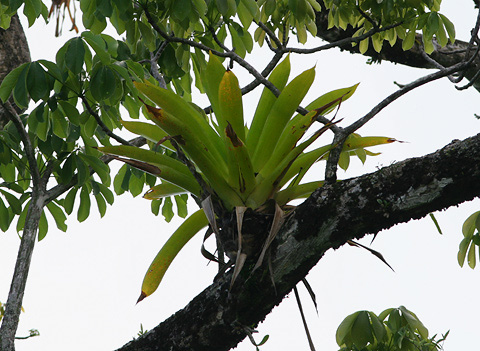
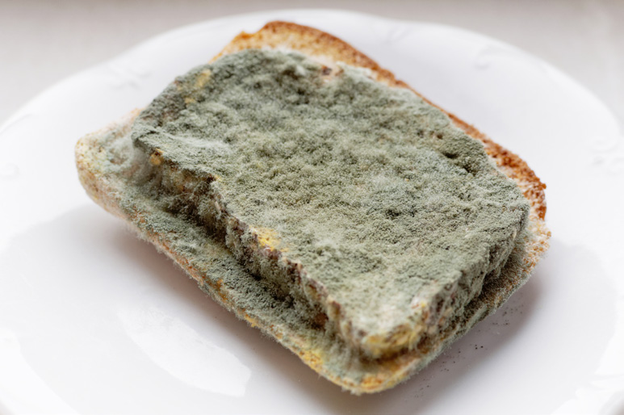

Student’s Book - Form Two
Biology for Secondary Schools
3
which one species benefits, while the other is neither harmed nor benefited.
In most cases, the host individual is larger than the commensal individual.
Commensal
organisms
benefit
in
various ways such as in getting nutrients, shelter, support, or transport from the host. For example, small fishes like remora attach to the body of
a large fish such as a shark. The shark enables remora to move in different areas without using its own energy, but the shark is not harmed, and it does not benefit from such a relationship.
Other examples are epiphytes which are small plants that grow on different trees but do not harm the trees (Figure
1.2). The epiphytes get access to nutrients, exposure to sunlight, and support from the trees while the trees are neither harmed nor benefited by the
relationship.

Epiphytic plant
Host plant
Figure 1.2: Host and epiphytic plants exhibiting commensalism
used for various activities. Digestion,
which takes place by the release of
enzymes outside the cell, is also called extracellular digestion. An example of
a saprophyte is a mushroom growing on
a log. The mushroom releases enzymes
externally through their root-like
structures, called rhizoids. The enzymes
cause decomposition and decay of the
log from which the mushroom gets its nutrients. Another example of a
saprophyte is bread mould that grows on
the surface of decaying bread to obtain the nutrients, as shown in Figure 1.1

Growing bread moulds
Figure 1.1: Bread mould growing on decaying bread
Symbiotic nutrition
This is a feeding relationship or an association between two species in which one or both benefit. Symbiosis can be in the form of commensalism, mutualism, or parasitism.
Commensalism: This is a feeding relationship or an association between individuals of two different species in


08/04/2026 10:18:10